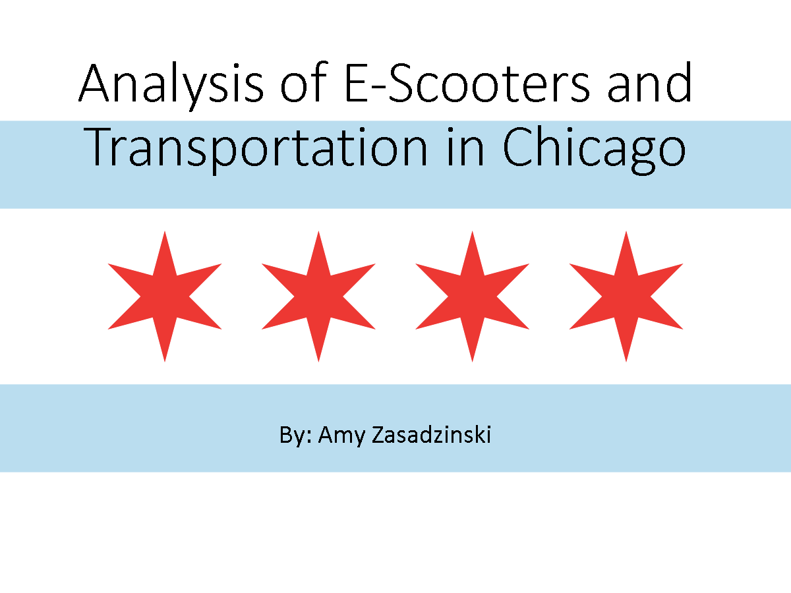

Chicago E-Scooter Data Analysis
This is a data analysis project on the electric scooter usage in Chicago that I completed in grad school. The purpose was to choose a point of view from which to assess the data, and create an analysis that would aid in the design of a solution for the future. I chose to analyze the data as a representative of a an e-scooter company who was trying to determine the usage patterns of commuters in Chicago to evaluate whether e-scooters could become an attractive alternative to rail-hail apps.
CandEmo Company Analysis
This is a company viability analysis that I completed in grad school of my idea for an Emo candy company called CandEmo. This project involved using quantitative and qualitative tests to provide evidence for the potential success or failure of specific design aspects of a theoretical company.